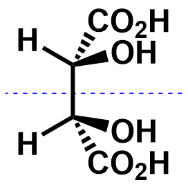

(R,R)-tartaric acid and (S,S)-tartaric acid are a pair of enantiomers.
Hence there are three stereoisomers altogether.
| (R,R)-tartaric acid | (S,S)-tartaric acid | (R,S)-tartaric acid | (S,R)-tartaric acid |
|---|---|---|---|
|
|
 | |
| There is an internal mirror plane in (R,S)-tartaric acid and (S,R)-tartaric acid, hence they are the same molecules. You can rotate the molecules to see that they are indeed the same. (R,R)-tartaric acid and (S,S)-tartaric acid are a pair of enantiomers. Hence there are three stereoisomers altogether. |
|||